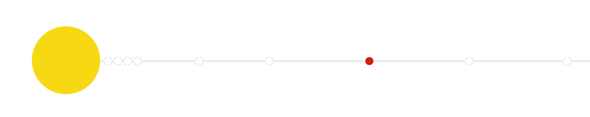
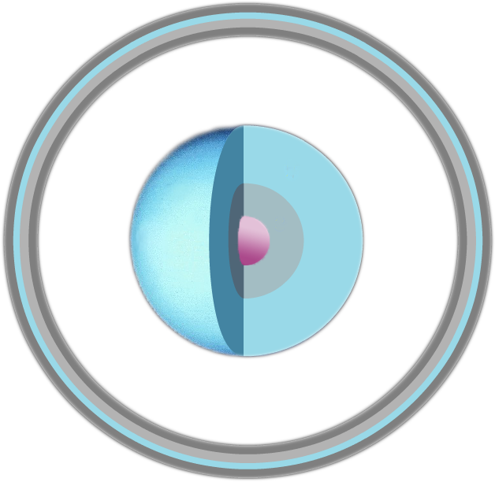

| HOMEPAGE | SISTEMA SOLARE | CORPI CELESTI | ||
| HOMEPAGE | SISTEMA SOLARE | CORPI CELESTI | ||
| paramentri orbitali | |
| semiasse maggiore |
2 870 972 220 km 19,19126393 UA |
| periodo orbitale | 84,07 anni |
| perdiodo sinodico | 369,65 giorni |
| Velocità orbitale |
6,49 km/s (min) 6,81 km/s (media) 7,11 km/s (max) |
| satelliti | 27 |
| anelli | 13 |
| dati fisici | |
| diametro equatoriale | 51 118 km | superficie | 8,084x 1015 m2 |
| velocità di rotazione | 2 590 m/s |
| temperatura | 59 K (-214 °C) |
Pianeta urano
È il settimo pianeta del Sistema solare, in ordine di distanza dal Sole, il quarto per massa e il terzo, dopo Giove e Saturno, come dimensioni; il suo diametro è circa 4 volte più grande di quello della Terra. Urano, come Giove, Saturno e Nettuno, è un pianeta gassoso o gioviano. Ha 15 satelliti principali e due sistemi di anelli.
A differenza degli altri pianeti del Sistema solare, il cui asse di rotazione risulta quasi perpendicolare al piano dell'orbita, Urano (come Plutone) ha un asse di rotazione pressoché parallelo al piano orbitale. Nel moto del pianeta attorno al Sole, dunque, ciascuno dei due poli resta esposto alla luce solare per un tempo pari alla metà del periodo di rivoluzione (che ha una durata di circa 84 anni). Una conseguenza è che le regioni polari hanno un irraggiamento che dura circa 40 anni. Nonostante ciò la temperatura più elevata si trova all’equatore.
A causa dello stato fluido della materia, la velocità di rotazione di Urano non è uniforme in tutti i suoi punti; analogamente a ciò che avviene per gli altri pianeti gassosi, il periodo di rotazione è più lento (poco più di 17 ore) per il nucleo e più rapido (fino a 14 ore) per le regioni esterne equatoriali. Come per Plutone, l'inclinazione dell'asse oltre i 90° determina inoltre nel pianeta un moto retrogrado, ossia in senso contrario a quello degli altri pianeti (vedi anche Mercurio).
Dati fisici
Anche se la massa è pari a 14 volte quella del Pianeta Terra ma la densità risulta solamente un quarto. La forza di gravità sulla superficie di Urano risulta dunque paragonabile a quella del nostro pianeta (analogamente a ciò che avviene su Saturno e Nettuno) ed ha una intensità di poco inferiore (circa il 10%) a quella del campo terrestre. Per fare un esempio, un oggetto che sulla Terra pesasse 100 chili, su Urano ne peserebbe 90.
Urano ha una composizione simile a quella di Nettuno ed è costituito principalmente da ghiaccio e roccia, con circa il 15% di idrogeno e una piccola parte di elio. La sua struttura è simile a quella della parte interna di Giove e Saturno; a causa però della minore massa, insufficiente a generare le enormi pressioni che si hanno su questi due pianeti, manca l'involucro di idrogeno metallico liquido.
I venti si muovono con velocità che superano i 700 km/h, parallelamente all'equatore; il moto delle correnti atmosferiche esterne è dunque determinato dalla rotazione del pianeta e non dall'illuminazione solare Non si nota la differenza tra estate e inverno e le temperature raggiunte risultano essere -215°C. Urano, come gli altri pianeti gioviani, possiede un campo magnetico piuttosto intenso e presenta uno schiacciamento dei poli dovuto alla combinazione dell'alta velocità di rotazione e dello stato fluido della materia.
Attorno a Urano orbitano numerosi satelliti, di cui 15 sono quelli considerati principali. I dieci satelliti interni sono più piccoli e molto scuri. I cinque maggiori, Ariel, Umbriel , Titania , Oberon e Miranda , sono più esterni, formati da roccia e ghiaccio, e mostrano sulla superficie tracce di forte craterizzazione e attività geologica interna. I satelliti di Urano hanno delle orbite quasi circolari poste sul piano equatoriale del pianeta, quindi con un grande angolo rispetto al piano dell'eclittica.